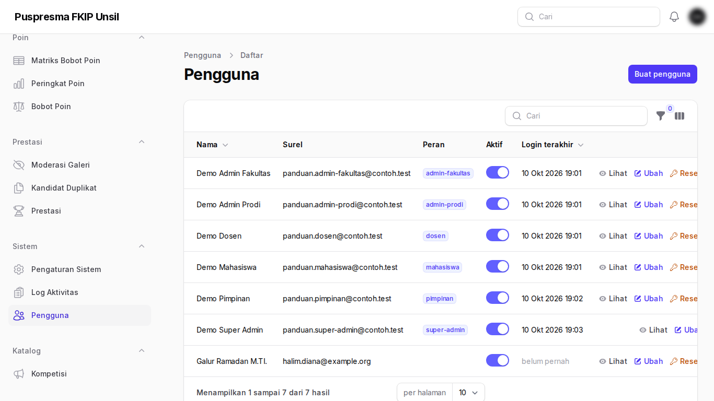
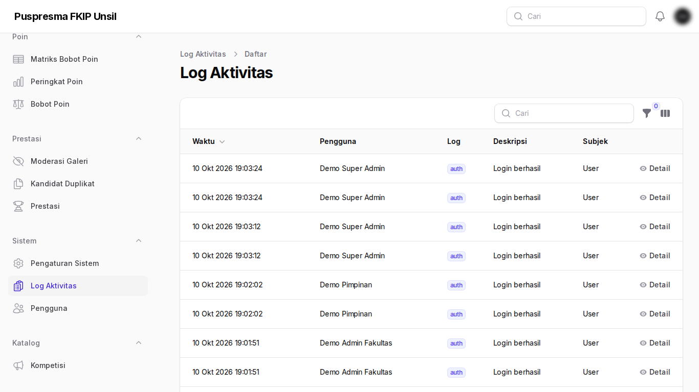
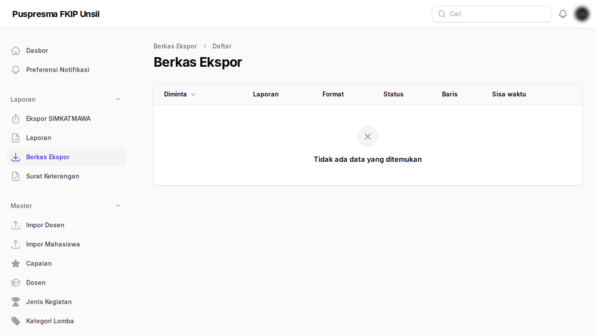

Panduan Super Admin
Tujuan
Mengelola pengguna, peran, MFA, antrean, dan backup. Super-admin tidak memverifikasi prestasi (pemisahan tugas).
Cara masuk
Masuk di panel Admin; wajib autentikasi dua langkah.
Langkah-langkah
- Pengguna dan peran. Buat akun, tetapkan peran dan prodi, nonaktifkan akun yang tidak dipakai.

Pengguna dan peran - Log aktivitas. Jejak audit: pembukaan tautan, transisi status, dan perubahan data.

Log aktivitas - Berkas ekspor. Hasil ekspor besar dari antrean (tersedia ≤ 24 jam).

Berkas ekspor
Tanya-jawab
- Notifikasi backup tidak masuk.
- Pastikan akun super-admin memiliki surel dan SMTP terisi.
- Di mana prosedur pulih?
- Lihat docs/PEMULIHAN.md di repositori.